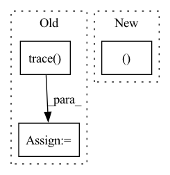

Pattern ID :26795
Before Change
register_observed_custom_module_mapping(CustomModule, ObservedCustomModule)
register_quantized_custom_module_mapping(CustomModule, QuantizedCustomModule)
m = torch.fx.GraphModule(original_m, CustomTracer().trace( original_m) )
qconfig_dict = {"": default_qconfig}
// check prepared model
m = prepare_fx(m, qconfig_dict)
// calibration
m(data)
// all activation observers are inserted in the top level moduleAfter Change
qconfig_dict = {
"": default_qconfig,
"custom_module_class":
[(CustomModule, ObservedCustomModule, QuantizedCustomModule )]}
// check prepared model
m = prepare_fx(original_m, qconfig_dict)
// calibrationIn pattern: SUPERPATTERN
Frequency: 3
Non-data size: 3
Instances Fragment ID: 79969700
Project Name: pytorch/pytorch
Commit Name: 7f6a1b2bd5eca2d25c70afe233f8b6878fec241d
Time: 2020-10-12
Author: jerryzh@fb.com
File Name: test/quantization/test_quantize_fx.py
M Class Name: TestQuantizeFx
N Class Name: TestQuantizeFx
M Method Name: test_custom_module_class(1)
N Method Name: test_custom_module_class(1)
M Parent Class: QuantizationTestCase
N Parent Class: QuantizationTestCase
M File Name: test/quantization/test_quantize_fx.py
N File Name: test/quantization/test_quantize_fx.py
M Start Line: 711
M End Line: 737
N Start Line: 708
N End Line: 722
Before Change
model.eval()
tracer = NodePathTracer()
graph = tracer.trace( model)
model = torch.fx.GraphModule(model, graph)
model = torch.jit.script(model)
outputs = model(torch.randn((batch_size, *input_size)))After Change
if max(input_size) > MAX_FWD_SIZE:
pytest.skip("Fixed input size model > limit.")
train_nodes, eval_nodes = get_graph_node_names(
model, tracer_kwargs={"leaf_modules": list(_leaf_modules), "autowrap_functions": list(_autowrap_functions)})
model = create_feature_extractor(
model, train_return_nodes=[train_nodes[-1]], eval_return_nodes=[eval_nodes[-1]], Fragment ID: 79969702
Project Name: feng-lab/pytorch-image-models
Commit Name: b25ff9676848a25df5c87f489bcece89f216e749
Time: 2021-11-12
Author: alexander.soare159@gmail.com
File Name: tests/test_models.py
M Class Name: AnonimousClass
N Class Name: AnonimousClass
M Method Name: test_model_forward_fx_torchscript(2)
N Method Name: test_model_forward_fx_torchscript(2)
M Parent Class:
N Parent Class:
M File Name: tests/test_models.py
N File Name: tests/test_models.py
M Start Line: 371
M End Line: 376
N Start Line: 398
N End Line: 409
Before Change
pytest.skip("Fixed input size model > limit.")
tracer = NodePathTracer()
graph = tracer.trace( model)
model = torch.fx.GraphModule(model, graph)
inputs = torch.randn((batch_size, *input_size))
outputs = model(inputs)After Change
if max(input_size) > MAX_FWD_SIZE:
pytest.skip("Fixed input size model > limit.")
train_nodes, eval_nodes = get_graph_node_names(
model, tracer_kwargs={"leaf_modules": list(_leaf_modules), "autowrap_functions": list(_autowrap_functions)})
model = create_feature_extractor(
model, train_return_nodes=[train_nodes[-1]], eval_return_nodes=[eval_nodes[-1]], Fragment ID: 79969708
Project Name: feng-lab/pytorch-image-models
Commit Name: b25ff9676848a25df5c87f489bcece89f216e749
Time: 2021-11-12
Author: alexander.soare159@gmail.com
File Name: tests/test_models.py
M Class Name: AnonimousClass
N Class Name: AnonimousClass
M Method Name: test_model_forward_fx(2)
N Method Name: test_model_forward_fx(2)
M Parent Class:
N Parent Class:
M File Name: tests/test_models.py
N File Name: tests/test_models.py
M Start Line: 308
M End Line: 320
N Start Line: 310
N End Line: 324